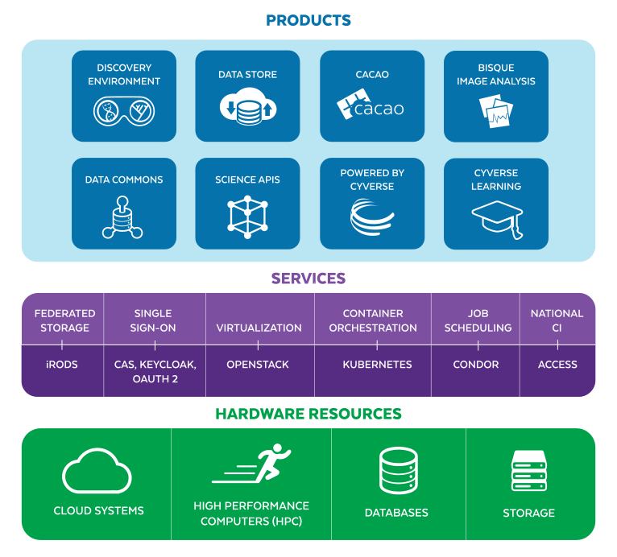

What CyVerse is¶
CyVerse is a computational infrastructure for data-intensive science, and the people who operate it. It is fully open source and funded by the United States National Science Foundation.
It is both a Software as a Service platform and the Infrastructure as Code needed to run one: the same stack that serves the public US deployment can be deployed by another institution on its own hardware or in the cloud. That is what this documentation is for.

Who this is for¶
Deploying CyVerse¶
Start with prerequisites, then read deploying from scratch end to end before running anything. Work the phases in deployment in order, and check each one against verification.
Before provisioning: component inventory and sizing and network requirements.
Operating a deployment¶
operations/ covers day-to-day administration: users and VICE access in DE administration, data and curation in Data Store administration, accounts in User Portal administration, and the recurring questions in the FAQ.
Integrating with the APIs¶
Terrain is the API behind every CyVerse product. The endpoint index lists everything documented here, and the live Swagger reference is the most current source. Authentication is OAuth 2.0 through Keycloak.
Contributing code¶
development/ covers the development environment and contribution workflow. Source lives in the CyVerse and CyVerse DE GitHub organizations.
What CyVerse offers its users¶
| Product | What it does |
|---|---|
| Discovery Environment | Web-based data science workbench with hundreds of integrated tools |
| Data Store | Multi-petabyte iRODS storage with HTTPS, WebDAV, SFTP, and API access |
| Data Commons | Publishing curated and community-released datasets, with DataCite DOIs |
| VICE | Interactive computing — JupyterLab, RStudio, Shiny — inside the DE |
| Cloud services (CACAO) | Infrastructure as code for multi-cloud deployments |
| BisQue | Bio-image semantic query and analysis |
| DNA Subway | Educational genomics workflows |
How this documentation is organized¶
This bundle follows the Open Knowledge Format v0.2.1 In practice that means three things you can rely on:
- Every document declares itself. Frontmatter carries its
type, a one-linedescription,tags, and astatusofdraft,stable, ordeprecated. Adraftdocument is incomplete and says so rather than pretending otherwise. - Every directory has an index.
index.mdlists what is in a directory with a line of description each, so you can see what exists before opening anything. - Derived documents cite their sources. Where a document was written from
something else,
sourcesin its frontmatter says what, including material mirrored under references/.
Changes to the bundle are recorded in the log.
Links¶
- CyVerse website
- FAQ
- GitHub organization
- Live Terrain API
- Harbor registry
- User-facing learning materials
Funding¶
CyVerse has been funded by the National Science Foundation from 2008 to the present.


SOFTWARE LICENSE
Copyright © 2010-2026, The Arizona Board of Regents on behalf of The University of Arizona
All rights reserved.
Developed by: CyVerse as a collaboration between participants at BIO5 at The University of Arizona (the primary hosting institution), Cold Spring Harbor Laboratory, The University of Texas at Austin, and individual contributors. Find out more at http://www.cyverse.org/.
Redistribution and use in source and binary forms, with or without modification, are permitted provided that the following conditions are met:
- Redistributions of source code must retain the above copyright notice, this list of conditions and the following disclaimer.
- Redistributions in binary form must reproduce the above copyright notice, this list of conditions and the following disclaimer in the documentation and/or other materials provided with the distribution.
- Neither the name of CyVerse, BIO5, The University of Arizona, Cold Spring Harbor Laboratory, The University of Texas at Austin, nor the names of other contributors may be used to endorse or promote products derived from this software without specific prior written permission.
THIS SOFTWARE IS PROVIDED BY THE COPYRIGHT HOLDERS AND CONTRIBUTORS "AS IS" AND ANY EXPRESS OR IMPLIED WARRANTIES, INCLUDING, BUT NOT LIMITED TO, THE IMPLIED WARRANTIES OF MERCHANTABILITY AND FITNESS FOR A PARTICULAR PURPOSE ARE DISCLAIMED. IN NO EVENT SHALL THE COPYRIGHT HOLDER OR CONTRIBUTORS BE LIABLE FOR ANY DIRECT, INDIRECT, INCIDENTAL, SPECIAL, EXEMPLARY, OR CONSEQUENTIAL DAMAGES (INCLUDING, BUT NOT LIMITED TO, PROCUREMENT OF SUBSTITUTE GOODS OR SERVICES; LOSS OF USE, DATA, OR PROFITS; OR BUSINESS INTERRUPTION) HOWEVER CAUSED AND ON ANY THEORY OF LIABILITY, WHETHER IN CONTRACT, STRICT LIABILITY, OR TORT (INCLUDING NEGLIGENCE OR OTHERWISE) ARISING IN ANY WAY OUT OF THE USE OF THIS SOFTWARE, EVEN IF ADVISED OF THE POSSIBILITY OF SUCH DAMAGE.
-
Open Knowledge Format v0.2 specification ↩